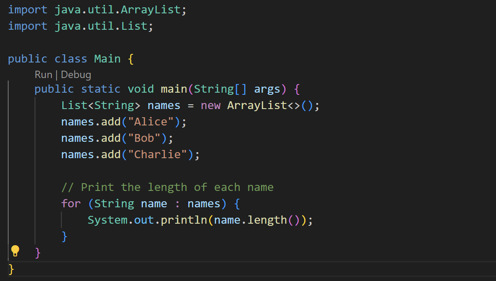
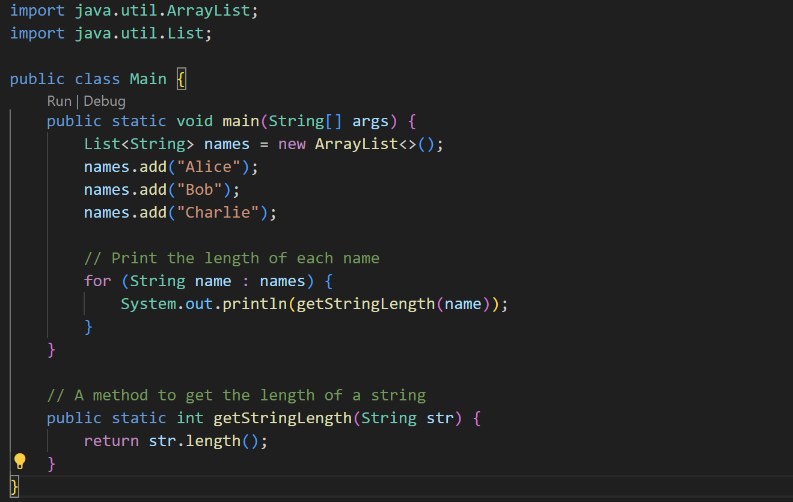

Contoh Code :
Before :

Dalam contoh di atas, program mencoba mencetak panjang setiap nama dalam daftar names. Namun, jika dalam versi Java tertentu, panjang string dapat diakses langsung menggunakan length() seperti yang ditunjukkan di atas. Tetapi, misalkan kita menggunakan versi Java yang lebih lama atau spesifik, dan kita perlu menambahkan metode yang tidak tersedia dalam kelas String.
After :

Dalam contoh di atas, kita telah menambahkan metode getStringLength() yang mengembalikan panjang dari string yang diberikan. Dengan cara ini, kita tidak lagi bergantung pada metode length() langsung dari kelas String, yang dapat memungkinkan kode kita berjalan di berbagai versi Java tanpa masalah "incomplete library classes".